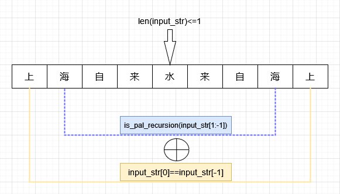
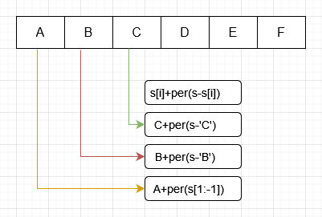
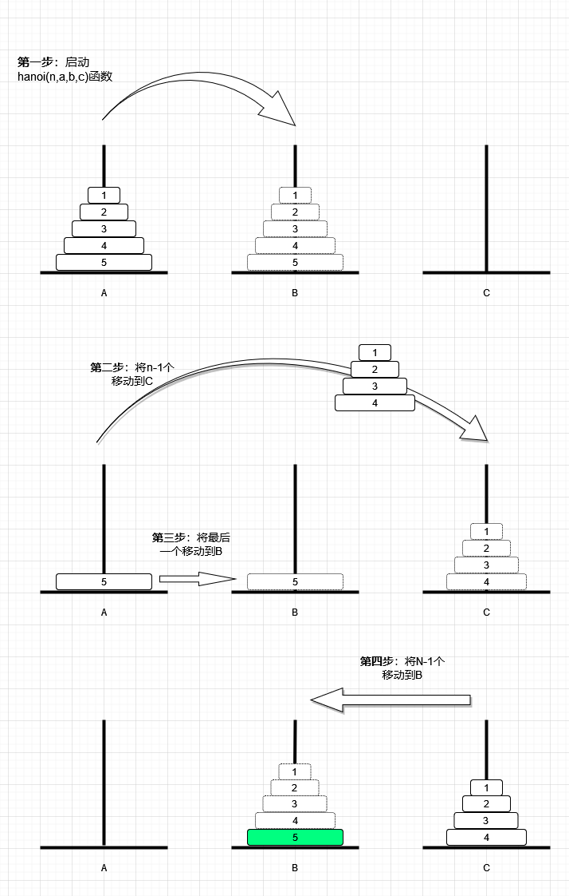

Python递归算法及其简单应用
一、递归算法
递归算法是一个相对较抽象的问题，有点像套娃，一开始不怎么好理解。
一旦抓住了核心思路，理解起来就相对容易了。
- 递归问题要点：
- 边界条件（终止条件）：否则将无限循环
- 子问题必须与原问题结构一致，但是输入规模小于原问题的规模（即要求问题分解和循环计算）
- 递归解题思路：
- 假设问题有解，且函数为Fun(p)，p为函数的输入；
- 可将原问题分解为为n个子问题，即P1，P2，P3，....Pn
- 由于原问题的函数为Fun，因此求解各子问题的函数依然为Fun()
- 子问题对应输入元素个数（规模）要小于原问题的输入元素
- 建立子问题的解与原问题的关系：
- Fun(p)=Fun(P1)+Fun(P2)+Fun(P3)......+Fun(Pn)
- 根据以上关系得到递归结构
- 子问题最简形式存在解（边界或终止条件）
二、斐波那契函数
题目简单明了，函数和终止条件已经说明
- 题目：
- f(n)=f(n-1)+f(n-2)
- f(0)=0 #终止条件1
- f(1)=1 #终止条件2
def fib_recursion(n):
if n<=1:
return n
else:
return fib_recursion(n-1)+fib_recursion(n-2)
if __name__=="__main__":
for i in range(1,31):
print(i,fib_recursion(i))
三、回文判断
- 题目：
- 正向与反向读都是相同字符串
- 如：noon，上海自来水来自海上，黄山落叶松叶落山黄
- 解题思路：
- 先假设输入的字符串是回文
- 定义回文函数：
is_pal_recursion(input_str) - 分析终止条件：
- 如果最后只有一个字符，是回文，返回True
- 如果最后只有零个字符，是回文，返回True
len(input_str)<=1，return True
- 分解子问题：
input_str[0]==input_str[-1] and is_pal_recursion(input_str[1:-1])

def is_pal_recursion(input_str):
print(input_str)
if len(input_str) <= 1:
return True
else:
return input_str[0] == input_str[-1] and is_pal_recursion(input_str[1:-1])
if __name__ == "__main__":
flag = is_pal_recursion("黄山落叶松叶落山黄")
print(flag)
四、全排列
- 题目：
- 输入字符串为N个不相同字符，输出N个字符的全排列
- 解题思路
- 假设题目存在解，定义函数为：
per(s) - 终止条件：s的长度为1，
len(s)<=1: return s - 分解子问题：
s[i]+per(s-s[i]) #s-s[i]为s[i]以外的字符串，字符串长度为n-1- 对字符串s先提取一个，然后对剩余字符串重复调用自身
- 每一次重复调用自身时，需要将提取的一个字符加上剩余的字符，然后加入到list中
- 假设题目存在解，定义函数为：

def per(s):
lens=len(s)
if lens<=1:
return s
else:
result=[]
for i in range(lens):
ch=s[i]
rest=s[0:i]+s[i+1:lens]
for j in per(rest):
result.append(ch+j)
return result
if __name__=="__main__":
print(per('abcde'))
五、汉诺塔
- 题目：
- 小盘必须在大盘上面
- 每次只能移动一个盘子
- 解题思路：
- 假设问题有解，定义函数：
hanoi(n,src,des,tmp) - 边界条件：柱子上只有一个盘子，此时仅需移动一个盘子即可
- 第一步：启动
hanoi函数 - 第二步：将n-1个盘子移动到临时柱子（tmp）上；
- 第三步：将底部盘子（第n个盘子）移动到目标柱子上；
- 第四步：重复调用递归函数，将n-1个盘子移动到目标柱子上。
- 假设问题有解，定义函数：

step = 1
def hanoi(num, src, des, tmp):
if num <= 1:
movSingle(src, des)
else:
hanoi(num - 1, src, tmp, des)
movSingle(src, des)
hanoi(num - 1, tmp, des, src)
def movSingle(src, des):
global step # 声明为global，否则cannot access local variable 'step' where it is not associated with a value
disk = src[0].pop()
print("第" + str(step) + "步:从" + src[1] + "柱移动" + str(disk) + "盘到" + des[1] + "柱")
step += 1
des[0].append(disk)
if __name__ == "__main__":
a = ([6, 5, 4, 3, 2, 1], "A")
b = ([], "B")
c = ([], "C")
hanoi(len(a[0]), a, b, c)